Gallery of Examples from the book FVMHP applications¶
Contents
- Gallery of Examples from the book FVMHP applications
- Chapter 3: Linear Hyperbolic Equations
- Chapter 6: High-Resolution Methods
- Chapter 7: Boundary Conditions and Ghost Cells
- Chapter 10: Other Approaches to High Resolution
- Chapter 11: Nonlinear Scalar Conservation Laws
- Chapter 12: Finite Volume Methods for Nonlinear Scalar Conservation Laws
- Chapter 13: Nonlinear Systems of Conservation Laws.
- Chapter 16: Some Nonclassical Hyperbolic Problems
- Chapter 17: Source Terms and Balance Laws
- Chapter 20: Multidimensional Scalar Equations
Chapter 3: Linear Hyperbolic Equations¶
Directory: `$CLAW/apps/fvmbook/chap3/acousimple`
1D Acoustics simple waves
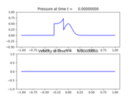 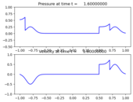 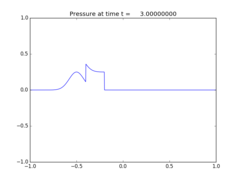Chapter 6: High-Resolution Methods¶
Directory: `$CLAW/apps/fvmbook/chap6/compareadv`
comparison of methods
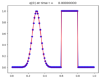 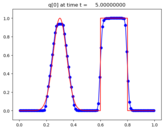 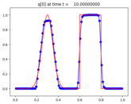Directory: `$CLAW/apps/fvmbook/chap6/wavepacket`
wave packet with 1st order Godunov shown here
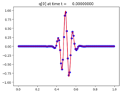 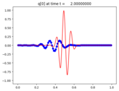
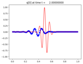
Chapter 7: Boundary Conditions and Ghost Cells¶
Directory: `$CLAW/apps/fvmbook/chap7/advinflow`
1D Advection with inflow boundary conditions at left and outflow BCs at right
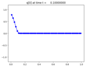 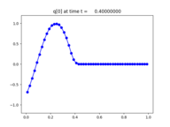 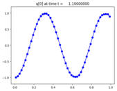Directory: `$CLAW/apps/fvmbook/chap7/acouinflow`
1D Acoustics with inflow boundary conditions at left and reflecting BCs at right
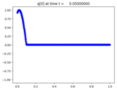 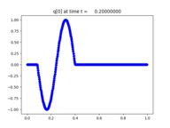 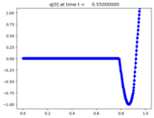Directory: `$CLAW/apps/fvmbook/chap7/standing`
1D Acoustics with a standing wave solution
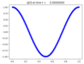 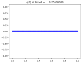 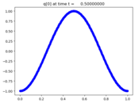Chapter 10: Other Approaches to High Resolution¶
Directory: `$CLAW/apps/fvmbook/chap10/tvb`
1D Advection with a TVB method
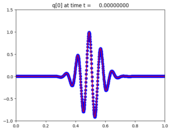 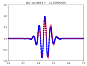
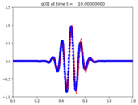
Chapter 11: Nonlinear Scalar Conservation Laws¶
Directory: `$CLAW/apps/fvmbook/chap11/burgers`
Burgers’ equation
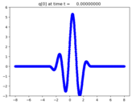 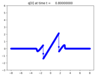 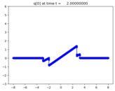Directory: `$CLAW/apps/fvmbook/chap11/congestion`
Traffic flow equation with density bulge
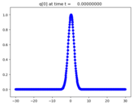 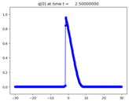 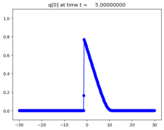Directory: `$CLAW/apps/fvmbook/chap11/greenlight`
Traffic flow equation with expansion fan
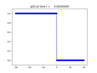 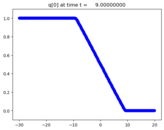
Directory: `$CLAW/apps/fvmbook/chap11/redlight`
Traffic flow equation with shock wave behind red light
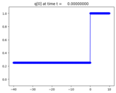 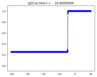 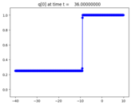Chapter 12: Finite Volume Methods for Nonlinear Scalar Conservation Laws¶
Directory: `$CLAW/apps/fvmbook/chap12/efix`
Burgers’ equation without entropy fix
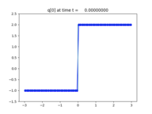 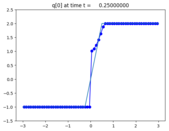 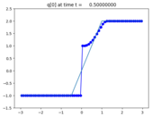Chapter 13: Nonlinear Systems of Conservation Laws.¶
Directory: `$CLAW/apps/fvmbook/chap13/collide`
Colliding and merging shock waves in shallow water equations
 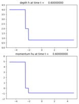
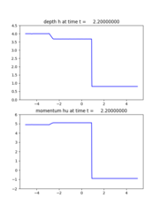
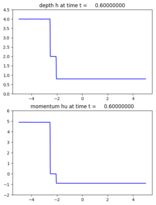
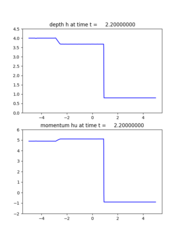
Chapter 16: Some Nonclassical Hyperbolic Problems¶
Directory: `$CLAW/apps/fvmbook/chap16/vctraffic`
Traffic equations with a spatially varying flux
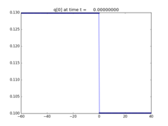 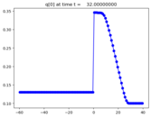
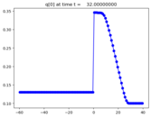
Chapter 17: Source Terms and Balance Laws¶
Directory: `$CLAW/apps/fvmbook/chap17/advdiff`
Advection-diffusion with implicit solver
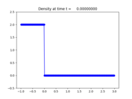 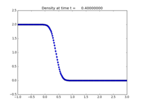 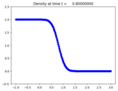Directory: `$CLAW/apps/fvmbook/chap17/onramp`
Traffic flow with an on-ramp
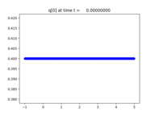 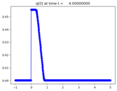 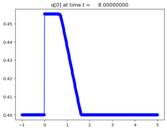

Version 5.4.0
Table Of Contents
- Gallery of
fvmbookapplications- Chapter 3: Linear Hyperbolic Equations
- Chapter 6: High-Resolution Methods
- Chapter 7: Boundary Conditions and Ghost Cells
- Chapter 10: Other Approaches to High Resolution
- Chapter 11: Nonlinear Scalar Conservation Laws
- Chapter 12: Finite Volume Methods for Nonlinear Scalar Conservation Laws
- Chapter 13: Nonlinear Systems of Conservation Laws.
- Chapter 16: Some Nonclassical Hyperbolic Problems
- Chapter 17: Source Terms and Balance Laws
- Chapter 20: Multidimensional Scalar Equations